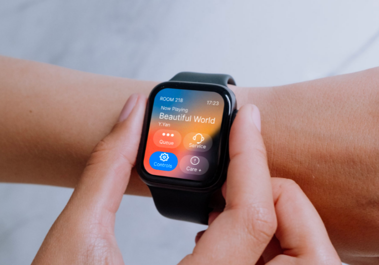

KTV Helper: Smartwear Companion
Wrist-Based Interaction Design for Song Requesting, Room Services, and Media Controls
Project Code: 9105-SmartwearCompanion
Student Name:
Yingtai YanStudent ID:
550226921
A wrist-worn smartwatch companion designed to streamline the KTV experience, featuring a unique video download page exclusive to Apple Watch for purchasing recorded singing clips.
Core Task Focus: Based on tutor feedback, the Apple Watch companion prioritizes essential in-room functions—song requesting, ordering snacks, extending room time, and adjusting audio volume. High-definition prototypes have been downgraded into interactive greyscale low-fidelity wireflows to emphasize core task usability over peripheral aesthetics.

Ambient noise masks standard acoustic alerts, demanding high-intensity tactile LRA haptics.
Dimly lit private rooms require high-contrast dark OLED canvases and oversized tap targets.
Intoxication impairs motor coordination, requiring 2-second hold confirmation delay buffers.
Multi-dimensional analysis demonstrating the failure modes of standard smartphone interfaces within high-decibel, high-energy social contexts.
High-decibel ambient noise (85–95 dB) in KTV rooms masks standard mobile acoustic alerts and voice commands, rendering phone calls and voice interactions unusable. This spatial isolation leads to missed notifications, severe delays, and low service request efficiency.
Alcohol intake combined with physical exhaustion from long KTV sessions slows user reactions and degrades fine-motor control. Accessing multi-level smartphone menus or entering precise alphanumeric inputs under fatigue becomes extremely cumbersome and error-prone.
The combination of vocal exertion, high-energy movement, and alcohol triggers rapid, undetected heart rate spikes. Without continuous passive wearable sensor tracking, users remain unaware of physiological danger thresholds, compromising safety.
Dividing bills and hailing rides at late-stage gatherings creates chaotic logistics. Frequent smartphone retrieval and app switching interrupts direct social interactions and fragments group engagement. Wearable shortcuts streamline collaboration, keeping the focus on group cohesion.
Iterative refinement of watch face spatial layouts and interaction models across three design cycles.
Replaced standard list structures with high-contrast, large-target touch tiles in a 2x2 grid to leverage spatial memory and accommodate degraded motor precision.
Introduced distinct intermediate confirmation screens (e.g., 'Calling...' with countdown) to prevent accidental service invocations from erratic tactile inputs.
Eliminated alphanumeric input by utilizing pre-configured home coordinates, providing immediate, glanceable vehicle confirmation (license plate and color).
Adopts a deep charcoal canvas background to support OLED energy conservation, paired with rich sunset red-orange gradients (`#E0533C` to `#11161B`) for warm room visuals and vibrant active blue triggers.
Cognitive walkthroughs focused on speed under distraction. Feedback led to larger touch areas, standard WatchOS back gestures, and LRA haptic confirmations, improving error recovery and flow completion.
Issues discrete service calls to KTV staff, confirming success via a localized haptic vibration pattern.
Continuously monitors PPG heart rate trends, automatically triggering localized prompts or peer alerts during abnormal cardiovascular spikes.
Initiates automated ride-hailing to the user's primary address with a single tap, displaying essential driver credentials.
Computes and displays individual cost divisions directly on the wrist, synchronizing status across group devices to minimize transaction friction.
Uses built-in Optical PPG sensor for heart rate tracking, linear resonant actuator (LRA) for haptic prompts, and GPS for safe dispatch.
An interactive greyscale low-fidelity wireflow focusing on core tasks: (S1) Home View for current song playback, (S2) navigating to service ordering, (S3) ordering snacks and drinks, (S4) extending room time, (S5) adjusting audio volume, (S6) accessing the unique video download page, and (S7) purchasing recorded singing clips.


Supporting Appendix
Full 10-Screen Interface Set, Hand-Drawn Sketches, Usability Review & References
Student: Yingtai Yan (550226921)
High-fidelity screen displays mapping the complete smartwatch companion subsystem.
1. Home View
Room, track, shortcuts.
2. Service List
Health, Service, Ride options.
3. Order Snacks
Menu and ordering.
4. Audio Volume
Music control dial.
5. Extend Time
Add 30/60 mins.
6. Video Clips
Exclusive watch page.
7. Purchase Clip
Buy recorded singing.

8. Evaluation
Post-service rating.

9. Settle Split
Equal split payment.

10. Settings
Vibration & toggles.
Evidence of visual ideation, paper wireframes, and digital wireflows demonstrating incremental iterations.

Pencil concepts mapping round watch target sizing and circular button bubble trials.

Sketched rectangular casing dimensions, cancel delay rings, and swipe target outlines.

Figma grey-box interactive wireflow tracing the primary watch assistant journey paths.
| Heuristic Category | Identified Watch Friction Point | Design Correction & Wearable Adaptation |
|---|---|---|
| Visibility of System Status | Absence of audible feedback prevents confirmation of service requests in high-decibel (85+ dB) social spaces. | Designed prominent full-screen state transitions paired with a distinct, sustained haptic vibration pattern. |
| Error Prevention | Intoxication impairs psychomotor skills, causing accidental touch inputs on adjacent control elements. | Integrated a 2-second touch-and-hold delay timer for high-consequence operations (Purchasing clips, Extending time) to permit cancellation. |
| Match System & Real World | Standard mobile transaction terminology introduces excessive cognitive load under fatigue. | Adopted natural, task-oriented phrasing ("Total Amount", "Your Share", "Split Summary") paired with visual avatars. |
| Flexibility & Efficiency | Navigating backward from deep menu levels requires repetitive, precise swipe gestures. | Provided a persistent, high-contrast back button and mapped physical crown clicks for immediate home navigation. |
Consultation Meeting Logs
Week 8 Review: Creative Director recommended moving away from complex mobile-style inputs. Instructed focusing on wearable-specific constraints: zero text inputs, high contrast, and haptic indicators.
Week 11 Evaluation: Peer testing showed users loved the physical safety net aspect. Recommended highlighting heart rate warnings in intoxication scenarios.
Interactive Prototypes & Files
Access the high-fidelity design workspace and interactive smartwatch companion prototype via the verified paths below: